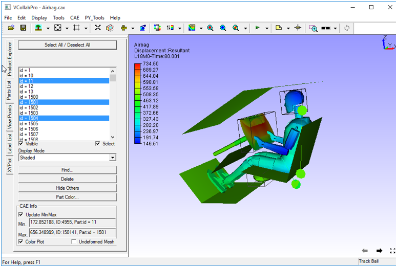
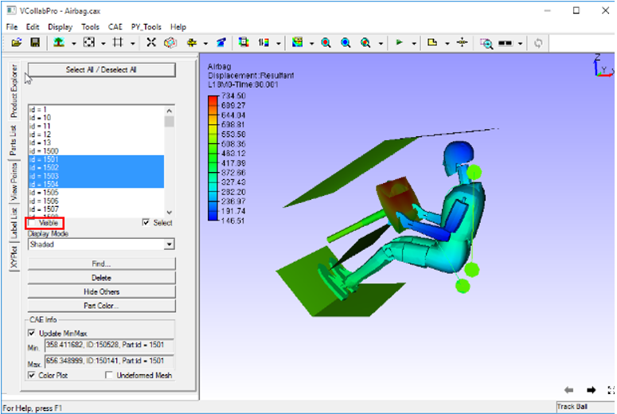
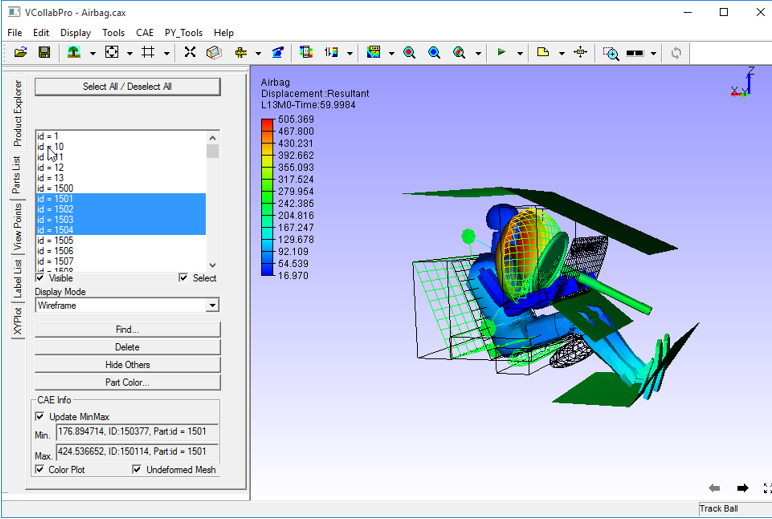

Part List
This command helps users to change individual part properties. Part List panel can be accessed from the left span of VCollab Pro.
Part List Panel

The controls available in the part list panel are as follows:
Select All / Deselect All Selects or deselects all parts. List box Lists all part names. Visible Toggles visibility to selected parts in the list Select Selects and highlights parts in the viewer Display Mode Allows user to select and apply a display mode to the parts selected. Find... Links to Edit | Find. Allows users to search parts by name. Delete Deletes parts that are highlighted/selected in the viewer. Hide Others Hides all parts except the parts highlighted in the viewer Part Color Links to Edit | Part Color. Allows users to edit part color material. Update MinMax Displays the min and max values for selected parts in the list Color Plot Applies or removes contour color for the selected parts in the list Undeformed Mesh Shows / Hides undeformed mesh for the selected parts in the list
Steps to set visibility for a part(s)
Click Edit|Part List.
Select a part or some parts.
Check /uncheck Visible to show/hide the parts selected.

Steps to highlight or select a part(s) of the model
Open Part List panel.
Select one or more parts
Check Highlight to highlight the parts selected.

Steps to set display mode for part(s)
Open Part List panel.
Select one or more parts
Select any display mode (Wireframe in the below example) from the drop down list to be applied to the parts selected.

Steps to view undeformed mesh of a part(s)
Open Part List panel.
Select some parts on the model
Click Undeformed Mesh checkbox to display undeformed mesh.

Steps to access and modify part level properties in the viewer
Double click on a part in the viewer to open the context menu

The following operations can be carried out for the selected parts
- Hide the part
- Hide all parts except this one.
- Focus on the part.
- Delete the part.
- Delete all parts except this one.
- Show all parts
- Show the parts which are hidden
- Deselect all parts
- Show / Hide color plot.